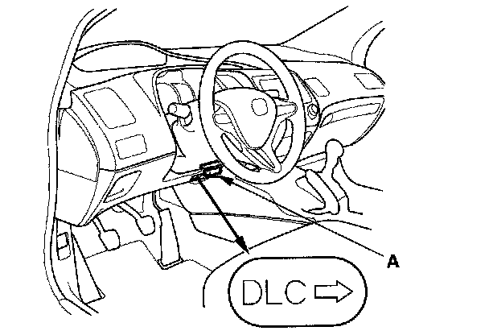

Scan Tool Testing and Procedures
How to Use the HDS (Honda Diagnostic System)1. If the system indicators stay on, connect the HDS to the data link connector (DLC) (A) located under the driver's side of the dashboard.

2. Turn the ignition switch ON (II).
3. Make sure the HDS communicates with the vehicle and the VSA modulator-control unit. If it doesn't, troubleshoot the DLC circuit.
4. Check the diagnostic trouble code (DTC) and note it. Also check the on board snapshot data, and download any data found. Then refer to the indicated DTC's troubleshooting, and begin the appropriate troubleshooting procedure.
NOTE:
^ The HDS communication will be stopped when the vehicle speed is at 31 mph (50 km/h) or more.
^ The HDS can read the DTC, current data, and other system data.
^ For specific operations, refer to the Help menu that came with the HDS.